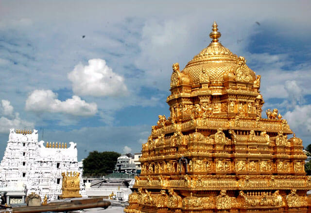

The Sri Venkateswara Swami Temple is a Hindu temple situated in the hills of Tirumala at Tirupati in Tirupati district of Andhra Pradesh, India. The temple is dedicated to Venkateswara, a form of Vishnu, who is believed to have appeared on the earth to save mankind from trials and troubles of Kali Yuga. Hence the place has also got the name Kaliyuga Vaikuntha and the deity here is referred to as Kaliyuga Prathyaksha Daivam. The temple is also known by other names like Tirumala Temple, Tirupati Temple and Tirupati Balaji Temple. Venkateswara is known by many other names: Balaji, Govinda, and Srinivasa.The temple is run by Tirumala Tirupati Devasthanams (TTD), which is under control of Andhra Pradesh Government. The head of TTD is appointed by Andhra Pradesh Government. The temple is one of the Pancha Kshethram where Maha Lakshmi was born as Bhargavi - the daughter of Maharishi Bhrigu.